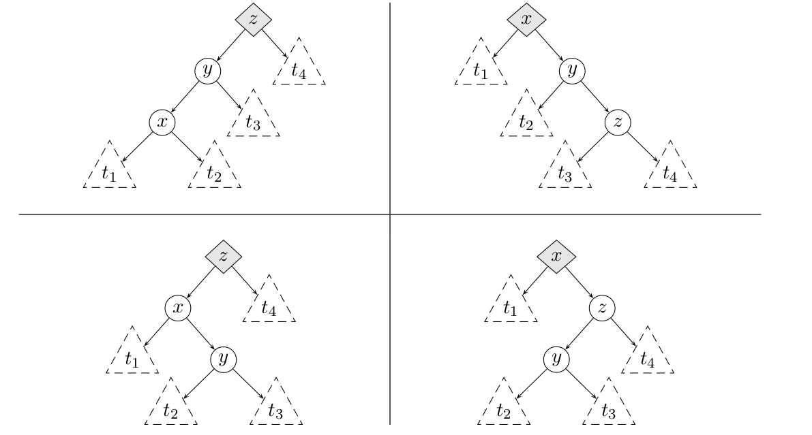
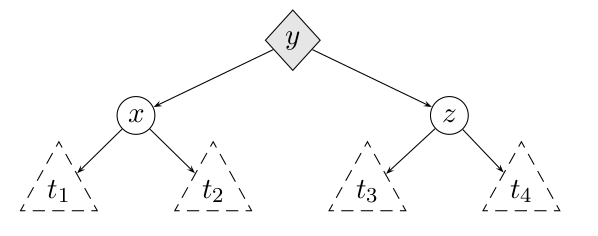
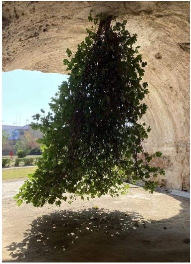

C12 Arbres binaires
"Trees sprout up just about everywhere in computer science"
Cours
Attention
Ce diaporama ne vous donne que quelques points de repères lors de vos révisions. Il devrait être complété par la relecture attentive de vos propres notes de cours et par une révision approfondie des exercices.
Travaux dirigés
Travaux pratiques
 Exercice 1 : Implémentation des arbres binaires en C
Exercice 1 : Implémentation des arbres binaires en C
On rappelle la structure de données vue en cours et permettant de représenter une arbre binaire en C :
struct noeud
{
struct noeud *sag;
int valeur;
struct noeud *sad;
};
typedef struct noeud noeud;
typedef noeud *ab;
ab cree_arbre(ab g, int v, ab d)
{
noeud *n = malloc(sizeof(noeud));
n->sag = g;
n->valeur = v;
n->sad = d;
return n;
}
-
En utilisant cette représentation, créer une variable
tde type arbre binaire représentant l'arbre suivant ;
graph TD A["14"] --> L["7"] A --> G["10"] L --> O["5"] L --> R["6"] G --- V1[" "] G --> I["12"] style V1 fill:#FFFFFF, stroke:#FFFFFF linkStyle 4 stroke:#FFFFFF,stroke-width:0pxVisualisation de l'arbre
On donne ci-dessous une fonction permettant de visualiser l'arbre. Attention, cette fonction utiliser une variable globale
int ninv = 0que vous devrez déclarer en début de programme.void write_edge(FILE *writer, ab g) { if (g->sag != NULL) { fprintf(writer, "%d", g->valeur); fprintf(writer, " -> "); fprintf(writer, "%d\n", g->sag->valeur); write_edge(writer, g->sag); } else { fprintf(writer, "I%d [style=invis]\n", ninv); fprintf(writer, "%d -> I%d [style=invis]\n", g->valeur, ninv); ninv++; } fprintf(writer, "I%d [style=invis]\n", ninv); fprintf(writer, "%d -> I%d [style=invis]\n", g->valeur, ninv); ninv++; if (g->sad != NULL) { fprintf(writer, "%d", g->valeur); fprintf(writer, " -> "); fprintf(writer, "%d\n", g->sad->valeur); write_edge(writer, g->sad); } else { fprintf(writer, "I%d [style=invis]\n", ninv); fprintf(writer, "%d -> I%d [style=invis]\n", g->valeur, ninv); ninv++; } } void view(ab g) { char buf[256]; int n; FILE *writer = fopen("temp.gv", "w"); FILE *imgwriter = fopen("temp.jpg", "wb"); fprintf(writer, "digraph mygraph {\n"); write_edge(writer, g); fprintf(writer, "}\n"); fclose(writer); FILE *dotresult = popen("dot temp.gv -Tjpg", "r"); if (dotresult == NULL) { printf("Bug !\n"); } while ((n = fread(buf, 1, 256, dotresult)) != 0) { fwrite(buf, 1, n, imgwriter); } pclose(dotresult); fclose(imgwriter); system("eog temp.jpg &"); } -
Ecrire une fonction
est_videde signaturebool est_vide(ab a)permettant de tester si l'arbre donné en paramètre est vide. -
Ecrire et tester la fonction
taillede signatureint taille(ab a)et qui renvoie le nombre de noeuds de l'arbre binaire donné en argument. -
Ecrire et tester la fonction
hauteurde signatureint hauteur(ab a)et qui renvoie la hauteur de l'arbre binaire donné en argument. -
Ecrire une fonction permettant
detruitde signaturevoid detruit(ab *a)qui permet de détruire un arbre binaire en libérant l'espace mémoire occupé par ses noeuds. Après l'appel à cette fonction,aest le pointeurNULL. -
Ecrire une fonction
arbre_aleatoirede signatureab ab arbre_aleatoire(int n)qui génère un arbre binaire aléatoire dennoeuds portant comme étiquette les entiers \(0, \dots, n-1\). Cette fonction procédera en choisissant un entier \(k\) au hasard entre \(0\) et \(n-1\) et en créant deux sous arbres aléatoire, l'un de taille \(k\) et l'autre de taille \(n-k-1\).Aide
- On pourra utiliser une fonction auxilaire
ab arbre_aleatoire(int n, int val)qui génère un arbre aléatoire dont l'étiquette de la racine estval. - On rappelle qu'en C,
rand()génère un entier aléatoire entre 0 et le plus grand entier représentable - Une méthode possible d'initialisation du générateur aléatoire de nombre est d'utiliser le temps :
srand(time(NULL));disponible après#include <time.h>
- On pourra utiliser une fonction auxilaire
-
Ecrire une fonction
insere_noeudde signaturevoid insere_noeud(ab *t, int v)qui insère à un emplacement aléatoire un noeud portant l'étiquettevdans l'abre*t. En déduire une nouvelle version de la fonction générant un arbre aléatoire.Aide
Pour insérer un noeud de façon aléatoire, on pourra procéder de la façon suivante :
- Si l'arbre est vide il devient l'arbre
(NULL,v,NULL) - Sinon on descend aléatoirement à gauche ou à droit pour y faire l'insertion.
- Si l'arbre est vide il devient l'arbre
Exercice 2 : Implémentation des arbres binaires en OCaml
On rappelle l'implémentation des arbres binaires en OCaml vu en cours :
-
En utilisant cette représentation, créer une variable
tde typeabreprésentant l'arbre suivant ;
graph TD A["14"] --> L["17"] A --> G["9"] G --- V1[" "] L --> R["6"] L --- V2[" "] G --> I["8"] style V1 fill:#FFFFFF, stroke:#FFFFFF style V2 fill:#FFFFFF, stroke:#FFFFFF linkStyle 2 stroke:#FFFFFF,stroke-width:0px linkStyle 4 stroke:#FFFFFF,stroke-width:0pxVisualisation de l'arbre
On donne ci-dessous une fonction permettant de visualiser l'arbre. Attention, cette fonction utiliser une variable globale mutable
let ninv = ref 0;;que vous devrez déclarer en début de programme.let rec write_edge a writer = match a with | Vide -> () | Noeud (sag,e,sad) -> match sag, sad with | Vide, Vide -> (); | Noeud (_, eg, _), Vide -> Printf.fprintf writer "%d -> %d\n" e eg; Printf.fprintf writer "I%d [style=invis]\n %d -> I%d [style=invis]\n" !ninv e !ninv; ninv := !ninv +1; Printf.fprintf writer "I%d [style=invis]\n %d -> I%d [style=invis]\n" !ninv e !ninv; ninv := !ninv +1; write_edge sag writer; | Vide, Noeud(_,ed,_) -> Printf.fprintf writer "I%d [style=invis]\n %d -> I%d [style=invis]\n" !ninv e !ninv; ninv := !ninv +1; Printf.fprintf writer "I%d [style=invis]\n %d -> I%d [style=invis]\n" !ninv e !ninv; ninv := !ninv +1; Printf.fprintf writer "%d -> %d\n" e ed; write_edge sad writer; | Noeud (_,eg,_), Noeud (_,ed, _ ) -> Printf.fprintf writer "%d -> %d\n" e eg; Printf.fprintf writer "I%d [style=invis]\n %d -> I%d [style=invis]\n" !ninv e !ninv; ninv := !ninv +1; Printf.fprintf writer "%d -> %d\n" e ed; write_edge sag writer; write_edge sad writer; ;; let view a = let outc = open_out "temp.gv" in output_string outc "digraph mygraph {\n"; write_edge a outc; output_string outc "}\n"; close_out outc; ignore (Sys.command "dot -Tpng temp.gv -o temp.png"); ignore (Sys.command "eog temp.png");; -
Ecrire une fonction
est_videde signatureab -> boolpermettant de tester si l'arbre donné en paramètre est vide. -
Ecrire et tester la fonction
taillede signatureab -> intet qui renvoie le nombre de noeuds de l'arbre binaire donné en argument. -
Ecrire et tester la fonction
hauteurde signatureab -> intet qui renvoie la hauteur de l'arbre binaire donné en argument. -
En utilisant la méthode de votre choix (deux sont proposées dans l'exercice précédent), écrire en OCaml une fonction
arbre_alaetoirede signatureint -> abet qui renvoie un arbre aléatoire de \(n\) noeuds.
Exercice 3 : Arbre complet représenté par un tableau
Cet exercice concerne la représentation d'un arbre binaire complet de taille \(n\) par un tableau de taille \(n\) et est à traiter au choix en OCaml ou en C. Pour chaque question, le tableau tab da taille n est la représentation en machine d'un arbre binaire complet de taille n.
-
Ecrire une fonction qui pour le noeud situé à l'indice
irenvoie l'indice du parent (\(-1\) pour la racine) -
Ecrire une fonction qui pour le noeud situé à l'indice
irenvoie les indices des fils gauches et droit (\(-1\) s'il n'existent pas) -
Ecrire une fonction renvoyant la hauteur de l'arbre.
Exercice 4 : Parcours récursif en C
-
Ecrire en langage C, une fonction qui affiche les noeuds dans l'ordre :
a. d'un parcours prefixe
b. d'un parcours infixe
c. d'un parcours postfixe -
On souhaite à présent créer une liste chainée contenant les noeuds dans l'ordre du parcours préfixe
a. Implémenter une structure de liste chainée en C dans laquelle on conservera un pointeur sur la premier élément de la liste et aussi un pointeur sur le dernier élément de la liste. De cette façon, on peut concaténer deux listes en temps constant.
b. En utilisant cette implémentation, écrire une fonction renvoyant une liste chainée contenant les noeuds de l'arbre dans l'ordre d'un parcours prefixe.
Exercice 5 : Parcours récursif en OCaml
-
Ecrire les parcours récursif en OCaml de façon à renvoyer une liste contenant les noeuds dans l'ordre de chacun des parcours. Dans un premier temps on utilisera l'opérateur
@afin de concaténer deux listes sans se soucier des problèmes de complexité que cela implique. -
Ecrire une version de ces parcours de complexité linéaire
Aide
Utiliser une fonction auxiliaire dotée d'un accumulateur (voir TD).
Exercice 6 : Parcours en largeur en C
Ecrire une fonction de signature void largeur(ab a) qui affiche les noeuds dans l'ordre d'un parcours en largeur. Comme expliqué en cours, on peut utiliser une file qu'on pourra implémenter par exemple par une liste chainée (avec un pointeur de tête et un pointeur de queue).
Exercice 7 : Parcours en largeur en OCaml
Ecrire une fonction de signature ab -> unit qui affiche les noeuds dans l'ordre d'un parcours en largeur. Comme expliqué en cours, on peut utiliser une file qu'on pourra implémenter à l'aide du module Queue de Caml dont on rappelle ci-dessous quelques fonctions :
Queue.createde signatureunit -> 'a tqui crée une file d'attente vide, par exemplelet ma_file = Queue.create ()Queue.is_emptyde signature ('a t -> bool) qui teste si la file est vide ou nonQueue.pushde signature ('a -> 'a t -> unit) qui enfile un élément, par exempleQueue.push ma_file 10Queue.popde signature ('a t -> 'a) qui défile un élément, par exemplelet elt = Queue.pop ma_file
Exercice 8 : Arbre binaire de recherche en C
Pour l'implémentation des arbres binaires de recherche en C, on reprend la structure utilisée pour les arbres binaires :
struct noeud
{
struct noeud *sag;
int valeur;
struct noeud *sad;
};
typedef struct noeud noeud;
typedef noeud *abr;
-
Ecrire une fonction
inserede signaturevoid insere(abr *t, int v)qui insère la valeurvdans l'arbre binairet. -
Construire et visualiser l'arbre binaire obtenu en insérant successivement les valeurs \(7, 5, 9, 2\) et \(11\).
-
Ecrire une fonction
presentde signaturebool present(abr t, int v)qui teste l'appartenance de la valeurvà l'arbret.
Exercice 9 : Arbre binaire de recherche en OCaml
Pour l'implémentation des arbres binaires de recherche en OCaml, on reprend la structure utilisée pour les arbres binaires :
-
Ecrire une fonction
inserede signatureabr -> int -> abrqui insère une valeur dans un abr et renvoie l'abr obtenu. -
Construire et visualiser l'arbre binaire obtenu en insérant successivement les valeurs \(7, 5, 9, 2\) et \(11\).
-
Ecrire une fonction
presentde signatureabr -> int -> boolqui teste si une valeur appartient ou non à unabr.
Exercice 10 : Hauteur moyenne d'un ABR aléatoire
Le but de cet exercice est de faire des statistiques sur la hauteur de l'arbre binaire obtenu en insérant aléatoirement dans cet arbre les entiers \(0, \dots, 1023\). Pour l'implémentation, on utilisera au choix le C ou OCaml.
- Quelle est la hauteur maximale obtenue ? donner un ordre d'insertion permettant d'atteindre cette valeur
- Quelle est la hauteur minimale ?
-
Ecrire une fonction permettant de générer une permutation aléatoire des entiers \(0,\dots,1023\)
Aide
On pourra par exemple, générer le tableau des entiers de 0 à 1023 puis utiliser le melagne de Knuth
-
Créer une fonction prenant en argument un tableau d'entiers, qui insère ces entiers dans un abr puis renvoie la hauteur de l'arbre obtenu.
-
Donner la moyenne, le minimum, le maximum de la série statistique des hauteurs obtenues en utilisant 1000 fois la fonction précédente.
Exercice 11 : Sur les arbres rouge-noir
Pour réprésenter un arbre rouge noir en OCaml, on définit un type somme Rouge | Noir pour la couleur puis on ajoute cette information de couleur dans les noeuds :
-
Généralités
-
On rappelle (voir cours) que dans un arbre rouge-noir, le nombre de noeuds noirs le long d'un chemin menant de la racine à une feuille est toujours le même, cette quantité est la hauteur noire. Ecrire une fonction
arn -> intqui calcule la hauteur noire d'un arbre rouge noir. -
Tester votre fonction sur les deux arbres suivants :
Vous pouvez visualiser ces arbres grâce à la fonction de visualisation :let t1 = Noeud(Noeud(Vide,(Noir,0),Vide),(Noir,1),Noeud(Noeud(Vide,(Noir,2),Vide),(Rouge,3),Noeud(Vide,(Noir,4),Noeud(Vide,(Rouge,5),Vide)))) let t2 = Noeud(Noeud(Vide,(Noir,0),Vide),(Noir,1),Noeud(Noeud(Vide,(Noir,2),Vide),(Rouge,3),Noeud(Vide,(Noir,4),Noeud(Vide,(Rouge,5),Noeud(Vide,(Noir,6),Vide)))))Visualisation d'un arbre rouge noir en Caml
Attention, cette fonction utiliser une variable globale
int ninv = 0que vous devrez déclarer en début de programme.let rec write_edge a writer = match a with | Vide -> () | Noeud (sag,(c,e),sad) -> Printf.fprintf writer "%d [color = %s]\n" e (string_of_color c); match sag, sad with | Vide, Vide -> (); | Noeud (_, (_,eg), _), Vide -> Printf.fprintf writer "%d -> %d\n" e eg; Printf.fprintf writer "I%d [style=invis]\n %d -> I%d [style=invis]\n" !ninv e !ninv; ninv := !ninv +1; Printf.fprintf writer "I%d [style=invis]\n %d -> I%d [style=invis]\n" !ninv e !ninv; ninv := !ninv +1; write_edge sag writer; | Vide, Noeud(_,(_,ed),_) -> Printf.fprintf writer "I%d [style=invis]\n %d -> I%d [style=invis]\n" !ninv e !ninv; ninv := !ninv +1; Printf.fprintf writer "I%d [style=invis]\n %d -> I%d [style=invis]\n" !ninv e !ninv; ninv := !ninv +1; Printf.fprintf writer "%d -> %d\n" e ed; write_edge sad writer; | Noeud (_,(_,eg),_), Noeud (_,(_,ed), _ ) -> Printf.fprintf writer "%d -> %d\n" e eg; Printf.fprintf writer "I%d [style=invis]\n %d -> I%d [style=invis]\n" !ninv e !ninv; ninv := !ninv +1; Printf.fprintf writer "%d -> %d\n" e ed; write_edge sag writer; write_edge sad writer; ;; let view a = let outc = open_out "temp.gv" in output_string outc "digraph mygraph {\n"; write_edge a outc; output_string outc "}\n"; close_out outc; ignore (Sys.command "dot -Tpng temp.gv -o temp.png"); ignore (Sys.command "eog temp.png"); ();; -
Ecrire une fonction
verifie_abrde signaturearn -> boolqui vérifie que l'arbre donné en argument est un arbre binaire de recherche. -
Ecrire une fonction
verifier_couleursde signaturearn->boolqui vérifie que dans unarn, le père d'un noeud rouge est noir -
Déduire des questions précédentes une fonction permettant de vérifier qu'un arbre est bien un arbre rouge-noir.
-
-
Insertion dans un arbre rouge-noir
On rappelle (voir TD), que pour insérer un nouveau noeud dans un arbre rouge-noir, on commence par insérer comme dans un abr en coloriant le nouveau noeud en rouge. Puis lorsqu'un conflit rouge-rouge intervient, on le résout en coloriant la racine en noire si le conflit se situe à la racine, sinon on effectue une des transformations vues en TD.-
Ecrire une fonction
noicir_racinede signaturearn -> arnqui colorie la racine en noire -
Ecrire une fonction
correction_rougequi permet de corriger un conflit rouge-rouge lorsque celui ci ne se trouve pas à la racine. On utilisera un filtrage par motif et on rappelle qu'on se trouve dans l'un des quatre cas ci-dessous :

qui se ramène tous à :
-
Ecrire une fonction qui insère une nouvelle valeur dans un arbre rouge-noir
-
Créer un arbre rouge noir et y insérer tous les entiers compris entre 1 et \(1\,000\,000\). Quelle est la hauteur de l'arbre obtenu ?

-
Humour d'informaticien

Finally after years of search I found a real tree ...